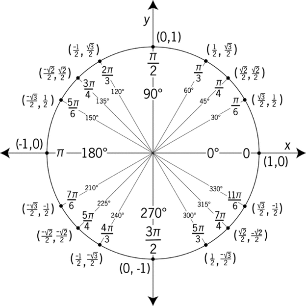

- Acute: 0° < θ < 90°
- Right: θ = 90°
- Obtuse: 90° < θ < 180°
- Straight: θ = 180°
- Reflex: 180° < θ < 360°
- Full: θ = 360°
Important note:
Always compare the angle measure with 90°, 180°, and 360° to identify its type quickly.
A clear and printable summary of the most important trigonometry rules, identities, formulas, and triangle methods.
By sides:
By angles:

| Angle | Radians | sin | cos | tan |
|---|---|---|---|---|
| 0° | 0 | 0 | 1 | 0 |
| 30° | π/6 | 1/2 | √3/2 | √3/3 |
| 45° | π/4 | √2/2 | √2/2 | 1 |
| 60° | π/3 | √3/2 | 1/2 | √3 |
| 90° | π/2 | 1 | 0 | undefined |
A reference angle is the positive acute angle between the terminal side of an angle and the x-axis.
Use it when:
Use it when:
How to choose the method:
Example 1: In a right triangle, relative to angle θ, the opposite side is 9 and the hypotenuse is 15. Find all six trigonometric functions of θ.
Example 2: In a right triangle, relative to angle θ, the adjacent side is 7 and the hypotenuse is 25. Find all six trigonometric functions of θ.
Example 3: In a right triangle, relative to angle θ, the opposite side is 12 and the adjacent side is 5. Find all six trigonometric functions of θ.
Reference: OpenStax – Right Triangle Trigonometry
Example 1: Given sin θ = 4/5 and θ is in Quadrant II, find the six trigonometric functions of θ.
Example 2: Given cos θ = -3/8 and θ is in Quadrant III, find the six trigonometric functions of θ.
Example 3: Given tan θ = -5/12 and θ is in Quadrant IV, find the six trigonometric functions of θ.
Example 1: Solve on 0° ≤ x < 360°: 2sin²x - 3sin x + 1 = 0
Example 2: Solve on 0° ≤ x < 360°: 2cos²x + cos x - 1 = 0
Example 3: Solve on 0° ≤ x < 360°: tan(2x) = √3
Reference: OpenStax – Solving Trigonometric Equations
Example 1: An observer looks at the top of a tower at an angle of elevation of 28°. After moving 45 m closer, the angle becomes 41°. Find the height of the tower and the final distance from the tower.
Example 2: A person sees the top of a building at 35°. After walking 60 m closer, the angle becomes 52°. Find the height of the building and the new distance from the building.
Example 3: An observer measures the angle of elevation to the top of a cliff as 18°. After moving 80 m closer, the angle becomes 33°. Find the height of the cliff and the final distance.
Reference: OpenStax – Applications of Right Triangle Trigonometry
Example 1: Given a = 8, b = 11, and C = 47°, solve triangle ABC.
Example 2: Given a = 13, b = 17, and c = 21, solve triangle ABC.
Example 3: Given A = 38°, a = 14, and b = 19, solve triangle ABC.